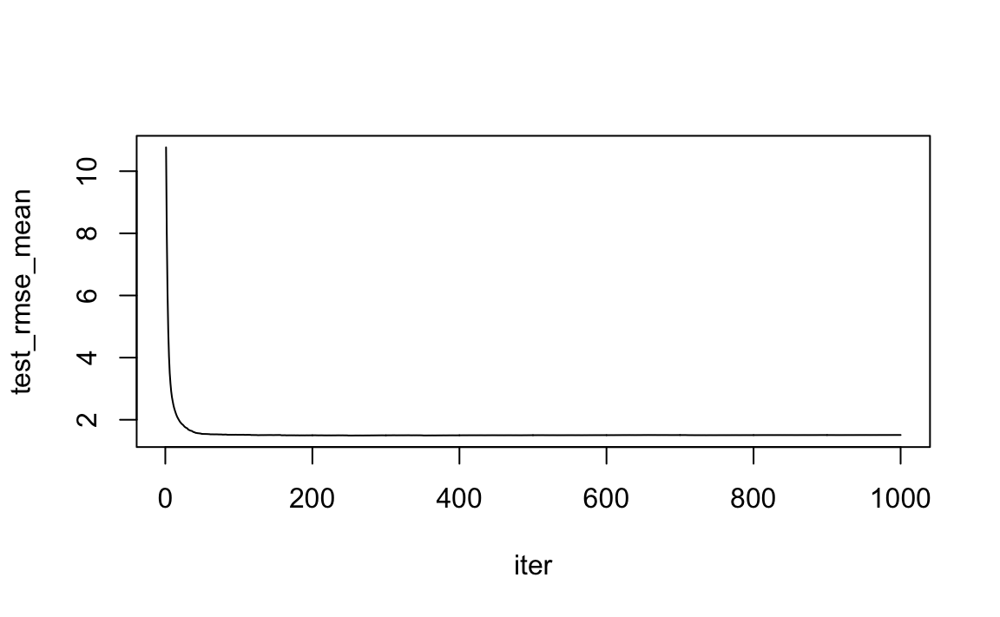
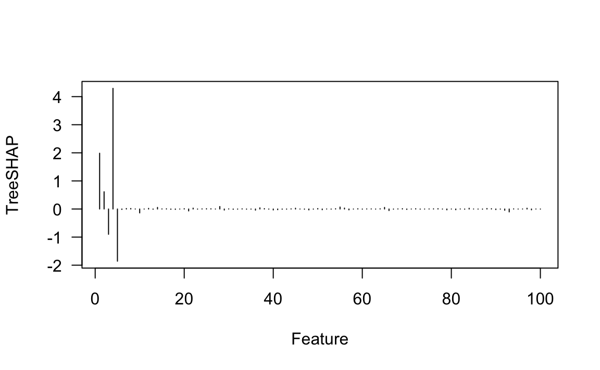
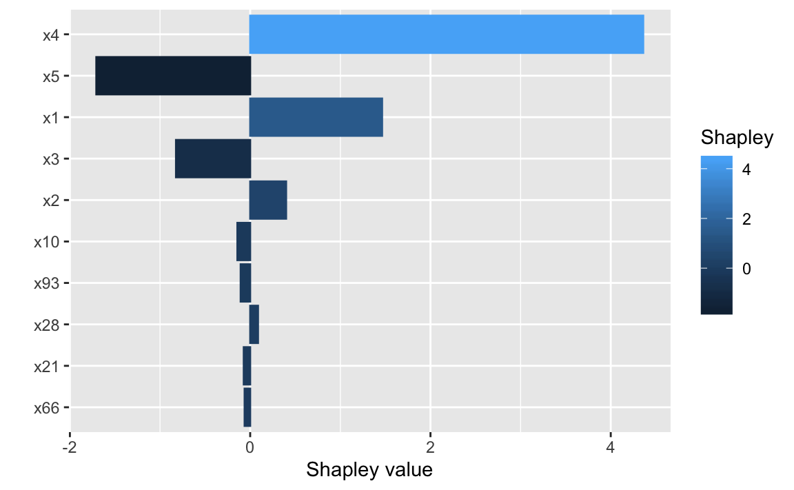
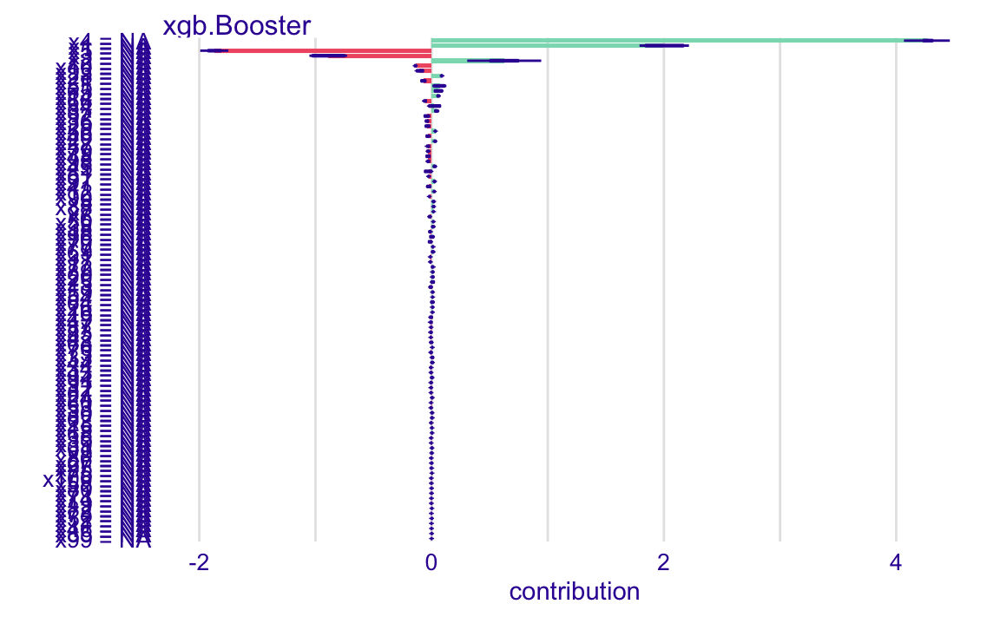
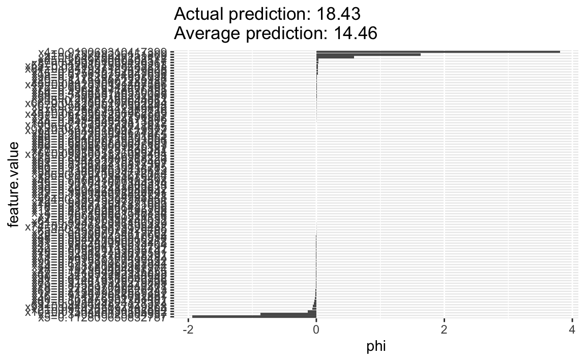
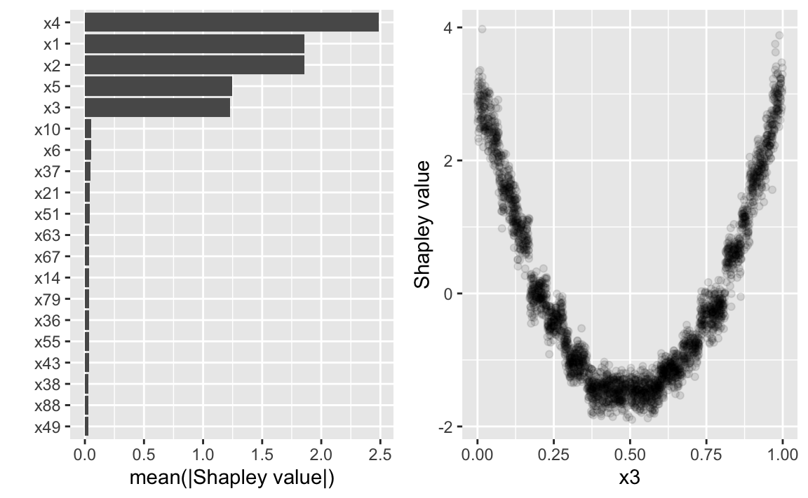

vignettes/fastshap-vs-iml-iBreakDown.Rmd
fastshap-vs-iml-iBreakDown.RmdThis notebook provides provides example code comparing fastshap against other available implementations in R; in particular:
Shapley().shap().All of these implementations employ the same Monte Carlo technique for computing the approximate Shapley (ApproxSHAP) values described in Štrumbelj and Kononenko (2014); in particular, see Algorithm 1.
As we increase the number of Monte Carlo repetitions (\(B\)), ApproxSHAP \(\rightarrow\) TreeSHAP (or ExactSHAP in general).
The above bullet point implies that ApproxSHAP values will not sum to the difference between the true prediction(s) for the observations to be explained (in this case, new_obs) and the average of all the training data predictions. Though, this holds in the limit as \(B \rightarrow \infty\).
The convergence of ApproxSHAP \(\rightarrow\) TreeSHAP depends on the variability in the training data features.
fastshap works on an entire column of training data at a time; hence, is more efficient at computing ApproxSHAP values for larger sets of training data (i.e., when you want SHAP-based variable importance plots, SHAP dependence plots, etc.)
Other implementations only compute ApproxSHAP values for a single observation at a time (at least as far as I can tell)
This is the primary reason why such implementations do not scale well to large sets of explanations (look at the estimated compute time from iBreakDown and iml and extrapolate to the full training set of \(N = 3000\) records—fastshap took roughly ten minutes for \(B = 100\) Monte Carlo repetitions (without turning on parallel processing), whereas iBreakDown and iml would each take several hours to compute.
If you only want explanations for a single observation, iBreakDown and iml are great and provide some bells and whistles in terms of plotting and printing.
If you want explanations for multiple instances, then fastshap seems to be the most efficient for non-XGBoost models (see, for example, the comparison with TreeSHAP on a random forest in this notebook.)
We’ll illustrate major concepts using the Friedman 1 benchmark problem described in Friedman (1991) and Breiman (1996):
\[ Y_i = 10 \sin\left(\pi X_{1i} X_{2i}\right) + 20 \left(X_{3i} - 0.5\right) ^ 2 + 10 X_{4i} + 5 X_{5i} + \epsilon_i, \quad i = 1, 2, \dots, n, \]
where \(\epsilon_i \stackrel{iid}{\sim} N\left(0, \sigma^2\right)\). Data from this model can be generated using mlbench package (Leisch and Dimitriadou 2012), however, we’ll use our own function to generate the data. The inputs consist of \(p > 5\) independent variables uniformly distributed on the interval \(\left[0,1\right]\); however, only five out of the \(p\) are actually used in the true model. The code chunk below simulates \(N = 3000\) observations from the model above default with \(p = 100\) and \(\sigma = 1\).
# Function to generate data from the Friedman 1 benchmark data set
make_freidman1 <- function(n_samples = 100, n_features = 10, sigma = 0.1,
seed = NULL) {
if (!is.null(seed)) {
set.seed(seed)
}
x <- matrix(runif(n_samples * n_features), ncol = n_features)
colnames(x) <- paste0("x", seq_len(n_features))
y = 10 * sin(pi * x[, 1L] * x[, 2L]) + 20 * (x[, 3L] - 0.5) ^ 2 +
10 * x[, 4L] + 5 * x[, 5L] + rnorm(n_samples, sd = sigma)
as.data.frame(cbind(y = y, x))
}
# Simulate training data from the Friedman 1 benchmark
set.seed(824) # for reproducibility
friedman1 <- make_freidman1(3000, n_features = 100, sigma = 1)
X <- subset(friedman1, select = -y)For these data, it should be clear that features \(X_1\)–\(X_5\) are the most important! (The others don’t influence \(Y\) at all.) Also, based on the form of the model, we’d expect \(X_4\) to be the most important feature, probably followed by \(X_1\) and \(X_2\), both comparably important, with \(X_5\) probably less important. The influence of \(X_3\) is harder to determine due to its quadratic nature, but it seems likely that this nonlinearity will suppress this variable’s influence since the total range of this term is from 0–1, the same as the \(X_5\) term.
For illustration, we’ll train an XGBoost model to the Friedman 1 benchmark data using the xgboost package (Chen, He, and Benesty 2017). We use XGBoost so that we can compare the approximate Shapley values to the exact ones produced by the TreeSHAP algorithm (Lundberg et al. 2019) which is implemented in xgboost.
The code below used 5-fold cross-validation to find a reasonable number of trees using a learning rate of 0.3 and a maximum depth of 2 (since we know there’s nothing higher than a two-way interaction in the true relationship):
# Load required packages
library(xgboost)
# Use 5-fold CV to tune an XGBoost model
set.seed(831)
fit.cv <- xgb.cv(data = data.matrix(X), label = friedman1$y, max_depth = 2,
eta = 0.3, nround = 1000, nfold = 5, verbose = 0,
objective = "reg:squarederror")
plot(test_rmse_mean ~ iter, data = fit.cv$evaluation_log, type = "l")
Next, we train an XGBoost model using the “optimal” number of trees found via cross-validation in the previous step (best_iter). We’ll also compute the RMSE and a pseudo \(R^2\) measure on \(M = 3000\) test points generated from the same population:
# Fit an XGBoost model
set.seed(834)
fit <- xgboost(data = data.matrix(X), label = friedman1$y, max_depth = 2,
eta = 0.3, nround = best_iter, objective = "reg:squarederror",
verbose = 0)
# Compute performance on test data
set.seed(846) # for reproducibility
test <- make_freidman1(3000, n_features = 100, sigma = 1)
pred <- predict(fit, newdata = data.matrix(subset(test, select = -y)))
# Performance measures
round(sqrt(mean((pred - test$y) ^ 2)), digits = 3) # RMSE## [1] 1.423## [1] 0.92We’ll start by explaining a single observation:
To get exact Shapley explanations for from an XGBoost model in R, just call the predict() function as usual and specify predcontrib = TRUE. Note there is also the option to compute an approximation (approxcontrib = TRUE) which will be faster, but here we’ll set it to FALSE:
system.time( # record approximate computation time
# Compute TreeSHAP values for new_obs
shap_xgboost <- predict(fit, newdata = new_obs, predcontrib = TRUE,
approxcontrib = FALSE)
)## user system elapsed
## 0.001 0.000 0.000This returns a matrix with the same number of rows as new_obs and one column for each feature, plus an additional "BIAS" column that gives the average of all the training data predictions:
## [,1]
## x1 1.985360742
## x2 0.614103556
## x3 -0.899817824
## x4 4.294398308
## x5 -1.857195020
## x6 -0.014919881
## x7 0.016558062
## x8 0.018279403
## x9 0.001175434
## x10 -0.138972044## [,1]
## x92 -0.0439854898
## x93 -0.1033432484
## x94 0.0049021733
## x95 -0.0014795465
## x96 0.0012071677
## x97 0.0273853615
## x98 -0.0293643530
## x99 -0.0001737091
## x100 -0.0024257647
## BIAS 14.4637489319The sum of the exact Shapley values (which is what TreeSHAP can give for tree-based models) gives the difference between the true prediction(s) for the observations to be explained (in this case, new_obs) and the average of all the training data predictions.
## [1] 14.46375## [1] 18.41177## [1] 3.948027We can easily plot the TreeSHAP results from XGBoost after removing the "BIAS" component:
# Plot the results (the `[-101L]` is to remove the "BIAS" component)
plot(as.numeric(shap_xgboost)[-101L], type = "h", xlab = "Feature",
ylab = "TreeSHAP", las = 1)
To get approximate Shapley explanations using the fastshap package, we call the explain() function which requires a prediction wrapper for the model of interest (in particular, a function with two arguments, object and newdata, that returns a vector of predictions; see ?fastshap::explain for details). For XGBoost models on a regression task, stats::predict() suffices. Since this approach uses simulation to approximate the true Shapley values, we need to specify the number of Monte Carlo repetitions to use as well. For all the examples in this notebook, we’ll use \(B = 100\) Monte Carlo repetitions.
# Load required packages
library(fastshap)
library(ggplot2) # for autoplot() function
system.time({ # record approximate computation time
# Compute ApproxSHAP values for new_obs
set.seed(921) # for reproducibility
shap_fastshap <- explain(fit, X = data.matrix(X), nsim = 100,
newdata = new_obs, pred_wrapper = stats::predict)
})## user system elapsed
## 52.481 3.767 56.286The output from fastshap::explain() is always a tibble (Müller and Wickham 2019) containing the mean approximate Shapley values for each feature column:
## # A tibble: 1 x 100
## x1 x2 x3 x4 x5 x6 x7 x8 x9 x10 x11
## <dbl> <dbl> <dbl> <dbl> <dbl> <dbl> <dbl> <dbl> <dbl> <dbl> <dbl>
## 1 1.46 0.399 -0.823 4.36 -1.71 -0.00263 0.0121 0.0208 5.89e-4 -0.142 -0.00567
## # … with 89 more variables: x12 <dbl>, x13 <dbl>, x14 <dbl>, x15 <dbl>,
## # x16 <dbl>, x17 <dbl>, x18 <dbl>, x19 <dbl>, x20 <dbl>, x21 <dbl>,
## # x22 <dbl>, x23 <dbl>, x24 <dbl>, x25 <dbl>, x26 <dbl>, x27 <dbl>,
## # x28 <dbl>, x29 <dbl>, x30 <dbl>, x31 <dbl>, x32 <dbl>, x33 <dbl>,
## # x34 <dbl>, x35 <dbl>, x36 <dbl>, x37 <dbl>, x38 <dbl>, x39 <dbl>,
## # x40 <dbl>, x41 <dbl>, x42 <dbl>, x43 <dbl>, x44 <dbl>, x45 <dbl>,
## # x46 <dbl>, x47 <dbl>, x48 <dbl>, x49 <dbl>, x50 <dbl>, x51 <dbl>,
## # x52 <dbl>, x53 <dbl>, x54 <dbl>, x55 <dbl>, x56 <dbl>, x57 <dbl>,
## # x58 <dbl>, x59 <dbl>, x60 <dbl>, x61 <dbl>, x62 <dbl>, x63 <dbl>,
## # x64 <dbl>, x65 <dbl>, x66 <dbl>, x67 <dbl>, x68 <dbl>, x69 <dbl>,
## # x70 <dbl>, x71 <dbl>, x72 <dbl>, x73 <dbl>, x74 <dbl>, x75 <dbl>,
## # x76 <dbl>, x77 <dbl>, x78 <dbl>, x79 <dbl>, x80 <dbl>, x81 <dbl>,
## # x82 <dbl>, x83 <dbl>, x84 <dbl>, x85 <dbl>, x86 <dbl>, x87 <dbl>,
## # x88 <dbl>, x89 <dbl>, x90 <dbl>, x91 <dbl>, x92 <dbl>, x93 <dbl>,
## # x94 <dbl>, x95 <dbl>, x96 <dbl>, x97 <dbl>, x98 <dbl>, x99 <dbl>,
## # x100 <dbl>The results can also be visually summarized using the provided autoplot() method (see ?fastshap::autoplot.explain for details):
# Plot the results (only retaining the 10 highest |ApproxSHAP| values)
autoplot(shap_fastshap, type = "contribution", num_features = 10)
# Load required packages
library(iBreakDown)
system.time({ # record approximate computation time
# Compute ApproxSHAP values for new_obs
set.seed(952) # for reproducibility
shap_iBreakDown <- shap(fit, data = data.matrix(X), B = 100,
new_observation = new_obs)
})## user system elapsed
## 212.787 10.271 223.210The printed output from iBreakDown::shap() describes the distribution of the ApproxSHAP values:
## min q1 median mean
## xgb.Booster: x24 = NA 0.0007336491 0.0007336491 0.0007336491 0.0007336491
## xgb.Booster: x29 = NA -0.0188124068 -0.0188124068 -0.0188124068 -0.0188124068
## xgb.Booster: x35 = NA -0.0020827843 -0.0020827843 -0.0020827843 -0.0020827843
## xgb.Booster: x46 = NA -0.0001294092 -0.0001294092 -0.0001294092 -0.0001294092
## xgb.Booster: x53 = NA -0.0012747403 -0.0012747403 -0.0012747403 -0.0012747403
## xgb.Booster: x66 = NA -0.0489040096 -0.0489040096 -0.0489040096 -0.0489040096
## q3 max
## xgb.Booster: x24 = NA 0.0007336491 0.0007336491
## xgb.Booster: x29 = NA -0.0188124068 -0.0188124068
## xgb.Booster: x35 = NA -0.0020827843 -0.0020827843
## xgb.Booster: x46 = NA -0.0001294092 -0.0001294092
## xgb.Booster: x53 = NA -0.0012747403 -0.0012747403
## xgb.Booster: x66 = NA -0.0489040096 -0.0489040096The results can also be plotted using the plot() method (see ?iBreakDown::plot.break_down_uncertainty for details): 66

# Load required packages
library(iml)
# Create a Predictor object first
predictor <- Predictor$new(
model = fit,
data = as.data.frame(X),
predict.fun = function(object, newdata) {
predict(object, newdata = data.matrix(newdata))
})
# set.seed(201)
system.time({ # record approximate computation time
# Compute ApproxSHAP values for new_obs
set.seed(1314) # for reproducibility
shap_iml <- Shapley$new(predictor, sample.size = 100,
x.interest = as.data.frame(new_obs))
})## user system elapsed
## 33.617 0.298 8.632The printed output from iml::Shapley() describes the distribution of the ApproxSHAP values (mean and variance) as well as some other useful information like the predicted value and average training prediction:
## Interpretation method: Shapley
## Predicted value: 18.411772, Average prediction: 14.463746 (diff = 3.948026)
##
## Analysed predictor:
## Prediction task: unknown
##
##
## Analysed data:
## Sampling from data.frame with 3000 rows and 100 columns.
##
## Head of results:
## feature phi phi.var feature.value
## 1 x1 2.076755688 5.819188445 x1=0.75748296151869
## 2 x2 0.163127363 4.333172704 x2=0.364675947232172
## 3 x3 -1.064670558 1.635544574 x3=0.340840025804937
## 4 x4 4.125015030 7.143918634 x4=0.919069310417399
## 5 x5 -1.637164197 1.659772353 x5=0.112809650832787
## 6 x6 -0.004203491 0.004865409 x6=0.48173442389816The results can also be plotted using the plot() method (see ?iBreakDown::plot.break_down_uncertainty for details):

system.time({ # record approximate computation time
# Compute ApproxSHAP values for new_obs
set.seed(1345) # for reproducibility
shap_fastshap_all <- explain(fit, X = data.matrix(X), nsim = 100,
pred_wrapper = stats::predict)
})## user system elapsed
## 630.642 47.107 678.850With Shapley explanations for all the features on the entire training set you can construct informative plots (e.g., SHAP-based variable importance plots, SHAP dependence plots, etc.). We give two examples in the code chunk below:
# SHAP-based importance plot
p1 <- autoplot(shap_fastshap_all, num_features = 20)
# SHAP-based dependence plot for x3
p2 <- autoplot(shap_fastshap_all, type = "dependence", X = X, feature = "x3",
alpha = 0.1)
# Display plots side by side
grid.arrange(p1, p2, nrow = 1)
Breiman, Leo. 1996. “Bagging Predictors.” Machine Learning 8 (2): 209–18. https://doi.org/10.1023/A:1018054314350.
Chen, Tianqi, Tong He, and Michael Benesty. 2017. Xgboost: Extreme Gradient Boosting. https://CRAN.R-project.org/package=xgboost.
Friedman, Jerome H. 1991. “Multivariate Adaptive Regression Splines.” The Annals of Statistics 19 (1): 1–67. https://doi.org/10.1214/aos/1176347963.
Leisch, Friedrich, and Evgenia Dimitriadou. 2012. Mlbench: Machine Learning Benchmark Problems. https://CRAN.R-project.org/package=mlbench.
Lundberg, Scott M, Gabriel Erion, Hugh Chen, Alex DeGrave, Jordan M Prutkin, Bala Nair, Ronit Katz, Jonathan Himmelfarb, Nisha Bansal, and Su-In Lee. 2019. “Explainable Ai for Trees: From Local Explanations to Global Understanding.” arXiv Preprint arXiv:1905.04610.
Müller, Kirill, and Hadley Wickham. 2019. Tibble: Simple Data Frames. https://CRAN.R-project.org/package=tibble.
Štrumbelj, Erik, and Igor Kononenko. 2014. “Explaining Prediction Models and Individual Predictions with Feature Contributions.” Knowledge and Information Systems 41 (3): 647–65. https://doi.org/10.1007/s10115-013-0679-x.